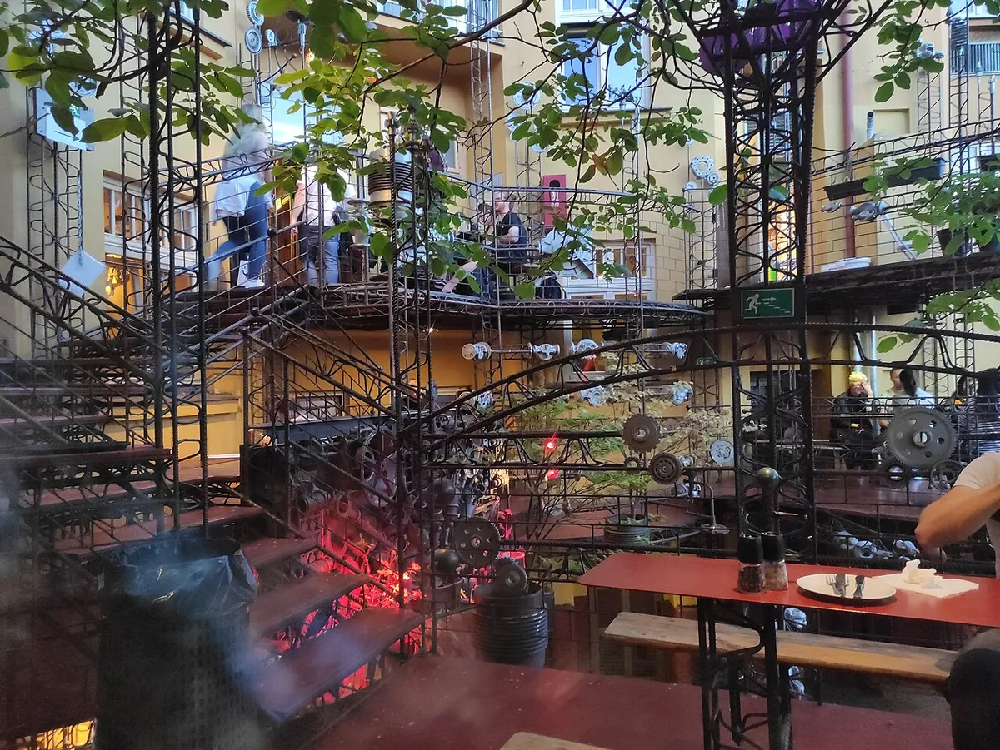

Clubbing cities
The best clubbing cities in Europe
Twelve cities judged by their clubs, from Berghain and fabric to Bassiani and Drugstore, with a guide for each where there is one.
Clubs, not resorts.
Search for the best party cities in Europe and you get travel lists: Mykonos, Magaluf, Ayia Napa and Sunny Beach sit next to Berlin as if they were the same kind of night. A beach resort sells a holiday with a party attached, while a clubbing city has rooms that people fly to for one weekend and a scene that carries on when the tourists go home. This guide is about the second kind. It covers the best nightlife cities in Europe for someone who wants a club, a sound system and a line-up, and says where each city is strongest.
The quick answer: how the cities compare.
| City | Clubs to know | Best for |
|---|---|---|
| Berlin | Tresor (1991), Berghain (2004) | Techno and long weekends |
| Amsterdam | Shelter, Radion, the Gashouder | 24-hour nights and Amsterdam Dance Event in October |
| London | fabric (1999) | Three rooms and a long club history |
| Ibiza | Hï, Pacha, Amnesia, DC-10, [UNVRS] | The biggest rooms, late April to mid-October only |
| Barcelona | Razzmatazz, Nitsa at Sala Apolo | A city break, with Sónar in June |
| Tbilisi | Bassiani (2014), KHIDI | Techno with a strict door |
| Prague | Cross Club (2002) | A club built from salvaged machinery |
| Budapest | A38, Lärm | Ruin bars first, clubs after |
| Lisbon | Lux Frágil (1998) | A riverside club |
| Paris | Rex Club (1988) | House and techno history |
| Krakow | Prozak 2.0 (2012) | A medieval basement |
| Belgrade | Drugstore (2012) | A former slaughterhouse |
Berlin, Amsterdam and London: the three club capitals.
Berlin is the benchmark. Tresor opened in March 1991 in the vaults of a derelict department store and still runs. Berghain opened in December 2004 in a former power plant in Friedrichshain, with Panorama Bar in the same building, and its long weekend and hard door are known far outside techno. The Berlin clubs guide covers the legends and the rooms open now.
Amsterdam is smaller but runs longer. Its night mayor and council gave 24-hour licences to around ten venues outside the old centre, so Shelter, under the A'DAM Tower, and Radion, in a former school building in Nieuw-West, can go on into the next afternoon. Amsterdam Dance Event in October and Awakenings at the Gashouder are the two reasons techno fans book flights. The Amsterdam clubs guide has the full list.
London has one of the longest club histories of any city here, from acid house onwards, and one club that everyone names: fabric, opened on 29 October 1999 in a former cold store opposite Smithfield Market, with three rooms and a dancefloor that sends the bass up through your feet. The London clubs guide goes through the rest.
Ibiza, Barcelona, Lisbon and Paris: the south and west.
Ibiza is the one island on this list, with very large clubs that open from late April to mid-October: Hï, voted the world's best club by DJ Mag readers four years running, Pacha since 1973, Amnesia since 1976, DC-10 and its Monday Circoloco parties, and [UNVRS], opened in 2025 on the old Privilege site. Out of season it is closed. The Ibiza clubs guide covers each room.
Barcelona has Razzmatazz, five rooms under one roof in Poblenou, and Nitsa, the electronic night that has run inside Sala Apolo since 1996. Sónar brings the city its biggest week every June. See the Barcelona clubs guide.
Lisbon has Lux Frágil, opened in 1998 in a warehouse on the river near Santa Apolónia station by Manuel Reis, with the actor John Malkovich as a partner, and widely called the most famous club in Lisbon. Buraka Som Sistema's set for Boiler Room in Lisbon, in 2013, shows another side of the city: kuduro.
Paris has Rex Club, a techno and house room in the basement of the Grand Rex cinema since 1988, and a newer wave of clubs around Canal Saint-Martin and the 11th arrondissement. The Paris clubs guide tells that story from Le Palace onwards.
Tbilisi, Prague, Budapest, Krakow and Belgrade: the east.

Tbilisi is the newest city here. Bassiani opened in 2014 inside the Dinamo Arena, using a disused swimming pool as its main dancefloor, with room for about 1,200. When police raided it on 12 May 2018 and arrested its two owners, the raid caused protests in the city. KHIDI is Tbilisi's other well-known techno club, and Boiler Room has filmed there too.
Prague has Cross Club in Holešovice, started in 2002 by František Sádra Chmelík and friends as a small private space for DJs and grown into a three-floor venue built from salvaged metal, pipes and moving machine parts. Its early DJs came from dubstep, breakbeat and other bass music before the programme widened. Of the best nightclubs in Prague, it is the most unusual.
Budapest is known for its ruin bars, which started with Szimpla Kert in 2002 in an old stove factory, but its clubs are a separate thing. A38 is a club and concert venue on a decommissioned Ukrainian stone-carrier ship, moored by Petőfi Bridge since 30 April 2003. Lärm is the city's room for serious techno.
Krakow has Prozak 2.0, a techno and house club running since 2012 in a medieval basement off Plac Dominikański, with three dancefloors and a Funktion-One system.
Belgrade has Drugstore, opened in 2012 in a former slaughterhouse, once the biggest in the Balkans, by a group of friends who built it with very little money. It books techno and experimental music, and is the main reason clubbers put Belgrade on this list.
How to choose a city.
If you want techno and nothing else, go to Berlin, Tbilisi or Amsterdam, and plan around a weekend, because the best nights in all three run long. If you want one enormous night with a famous name, go to Ibiza between May and October. If you want a city first and clubs second, Barcelona, Lisbon and Paris are better holidays with good rooms in them. Budapest, Krakow, Prague and Belgrade are smaller scenes, and each has at least one club worth the trip on its own.
Door policies differ as much as the music. Berghain and Bassiani are both strict at the door and both ban photos inside.
For a night in any of these cities without leaving home, the Selector plays a set at random from all 62,824 in the catalogue behind this site. For the festivals rather than the clubs, see the best electronic music festivals in Europe.
Clubbing cities FAQ.
What is the best city in Europe for clubbing?
Berlin, for the number of clubs where techno is the point and the length of the nights. Amsterdam and London are close behind, and Tbilisi is the newest city on the list.
What are the biggest party cities in Europe?
By size of rooms, Ibiza, with clubs that hold up to 10,000 people. By size of scene, Berlin and London. The resorts that top travel lists, such as Mykonos or Ayia Napa, are party holidays more than clubbing cities.
Which are the best cities in Europe for partying if you want techno?
Berlin, Tbilisi and Amsterdam, in that order, with Belgrade's Drugstore, Prague's Cross Club, Krakow's Prozak 2.0 and Budapest's Lärm as smaller rooms worth the trip.
Is Amsterdam or Berlin better for clubbing?
Berlin has more clubs built around techno, and Berghain's long weekend. Amsterdam is smaller, but its 24-hour licences mean clubs such as Shelter and Radion run into the next afternoon too.
Is Tbilisi good for clubbing?
Yes. Bassiani opened in 2014 in a disused swimming pool under the Dinamo Arena and holds about 1,200 people. KHIDI is the city's other well-known techno club, and Boiler Room has filmed at both.
Sources.
- thecatrave: Best clubs in Berlin
- thecatrave: Best electronic music clubs in London
- thecatrave: Best clubs in Amsterdam
- thecatrave: Best clubs in Ibiza
- thecatrave: Best clubs in Barcelona
- thecatrave: Best clubs in Paris
- Wikipedia: Bassiani
- Wikipedia: Cross Club
- Atlas Obscura: Cross Club
- Wikipedia: A38 (venue)
- Just Budapest: A Guide to Budapest Rave, Techno and Electronic Music Venues
- In Your Pocket Kraków: Prozak 2.0
- Telekom Electronic Beats: How Belgrade's Club Scene Grew From Wartime Rave Roots
- Drugstore Beograd
- The Lisbon Connection: Lux Frágil
- DJ Mag Top 100 Clubs 2015: Lux Frágil
- She's Abroad Again: 25 Best Party Places in Europe
Continue reading
Read next.
 Rave spots~10 min read
Rave spots~10 min readBest Clubs in Berlin: The Legends and the Ones Still Open
The rooms that made Berlin a techno city, the famous clubs that closed, and the best clubs in Berlin that are still open.
Read article → Rave spots~6 min read
Rave spots~6 min readBest Clubs in Paris: From Le Palace to Rex Club
Le Palace, Les Bains Douches and Rex Club: the clubs that made Paris nightlife, how each became famous, and the best clubs in Paris open now.
Read article → Rave spots~6 min read
Rave spots~6 min readBest Clubs in Barcelona: From Zeleste to Razzmatazz
Razzmatazz, Nitsa and Macarena Club: how Barcelona's biggest club grew out of a 1970s live venue, and the best clubs in Barcelona open now.
Read article → Rave spots~7 min read
Rave spots~7 min readBest Clubs in Amsterdam: From RoXY to Radion
Shelter, Radion, Lofi and the Gashouder: the best clubs in Amsterdam open now, why they run 24 hours, and the history from RoXY to De School.
Read article →